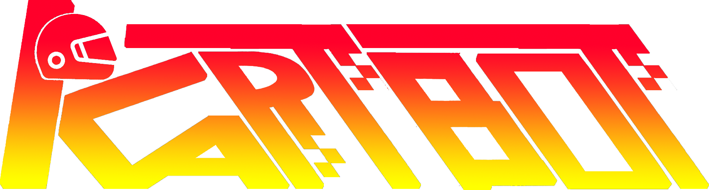

Pour commencer à jouer, connectez-vous à votre compte et téléchargez l'application mobile afin de contrôler votre voiture directement depuis votre téléphone.
KartBot est un système de robotique basé sur un Raspberry Pi 3 et un robot GoPiGo3, conçu pour être piloté à distance via une application mobile développée avec Android Studio (Kotlin).
Le robot évolue sur un circuit réel, tandis que l’application mobile permet de contrôler la conduite en temps réel. Chaque course est enregistrée afin de calculer les performances du joueur : temps des tours, collisions, distances parcourues et score final.
Le site web complète le système en permettant aux utilisateurs de : consulter leurs statistiques, suivre leurs scores, comparer leurs performances et visualiser le circuit en 3D.
Voir le projet sur GitHub